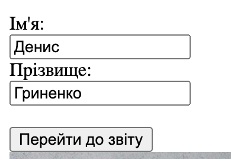

<form action="report.html" target="_blank">
<label for="fname">Ім'я:</label><br>
<input type="text" name="fname" value="Денис"><br>
<label for="lname">Прізвище:</label><br>
<input type="text" name="lname" value="Гриненко"><br><br>
<input type="submit" value="Надіслати">
</form>

Ми використовували атрибут <type> для зазначення типу даних в формі. Використовували атрибут <name> щоб дати назву тегу форми.
Також використали атрибут <value> щоб дати значення поля за замовчуванням